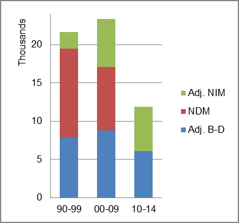

The foreign-born (FB) population increased from 7,457 in 1960 to 131,667 in 2010. That was an increase of 1665.7 percent. The foreign-born share changed from 0.4 percent to 4.5 percent.
The share of the overall population that was native-born (NB) increased by 57.2 percent.
Arkansas: Population 1960-2010
The first chart below shows the three population change factors for three periods adjusted for annual average amounts. Domestic migration (NDM) was the largest factor adding population in the first period, replaced by B-D in the two most recent periods.
The second chart shows the same data but with an adjustment to reflect births to immigrants shifted to NIM. In it, the relative contibutions to population increase remained unchanged.
Arkansas: Sources of Population Change 1990-2013 Arkansas: Sources of Population Change (Adjusted) 1990-2013 
B-D NDM NIM B-D NDM NIM 90-'99 41.5% 53.6% 4.9% 90-'99 36.7% 53.6% 9.7% 00-'09 47.7% 35.4% 16.9% 00-'09 38.5% 35.4% 26.1% 10-'13 71.1% 7.0% 21.9% 10-'13 52.2% 7.0% 40.8%